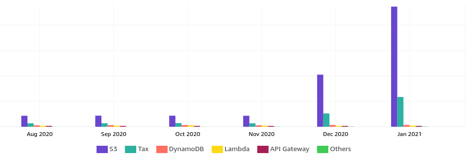
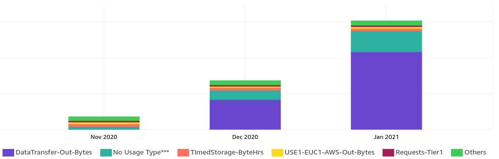
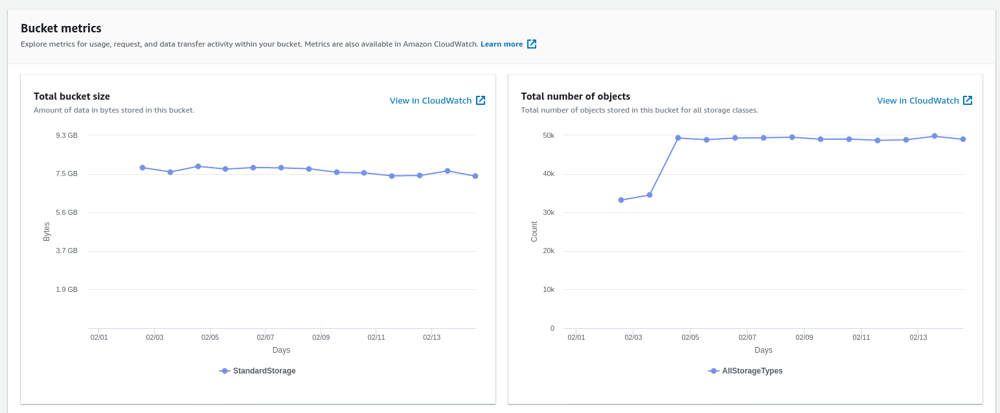
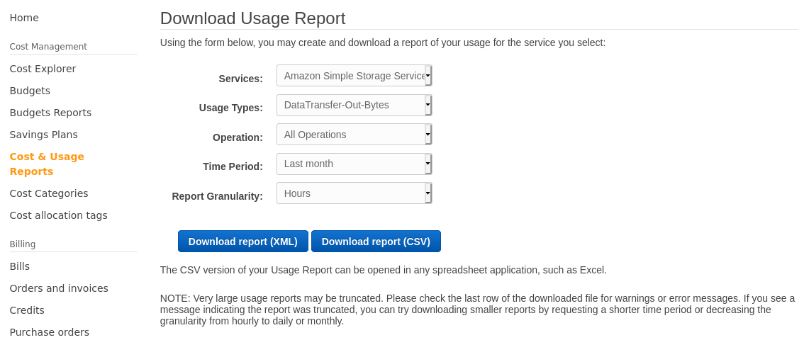
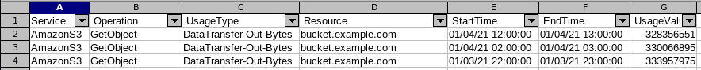
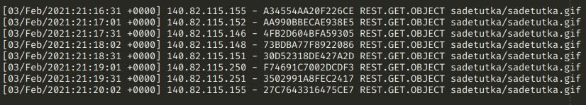
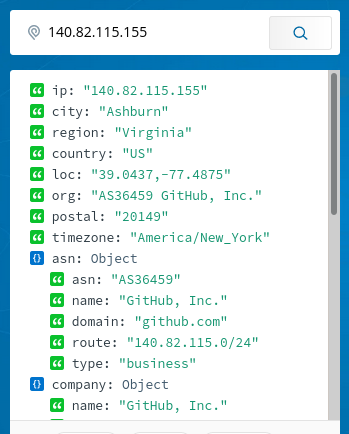
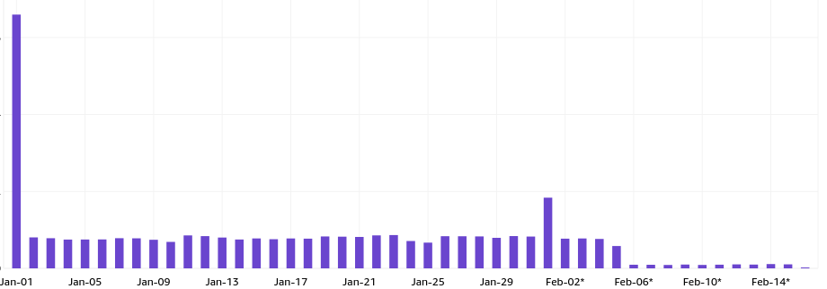

Locating costly AWS S3 buckets
I recently got a surprisingly large AWS bill which had me immediately realize something was wrong, because I did not host anything that should consume dramatically more resources month-over-month.

Happy AWS billing day:

Why is S3 costing so much?
The overview just points at S3. The cost explorer had some breakdown options:

This revealed that it is the (S3) outbound data transfer that is causing this - not stored S3 object count or size.
Identifying the bucket
To my surprise, S3 buckets don’t show you metrics for the bandwidth. The built-in metrics in the UI only include object count and size:

I have quite many buckets, so I don’t even know which bucket is costing me. This felt unfair.
I tried to search S3 metrics from CloudWatch, but it’s become even confusing than before and I couldn’t find any metrics. I was not sure if there even are metrics for per-bucket data transfer.
I tried to search the web for identifying costs or bandwidth per S3 bucket, but surprisingly I didn’t find good results.
What finally worked was to go and download a usage report as .csv:

And I finally got some statistics:

It was quite easy to find the outlier bucket, but that bucket has quite a lot of files and now my question was which file(s) contribute to the problem the most..
Identifying which files get downloaded so much
I knew S3 has logging. My bucket did not have logging enabled, so I had to enable S3 request logging first to start accumulating the data. The issue was still ongoing, so I knew I will still get useful “forensics” data.
I came back the next morning to analyze the request data. S3 writes out quite many log files, so I first combined all the log files into one, then sorted it (so the requests are in chronological order). I excluded many patterns out that weren’t GET requests or that contributed noise.
I didn’t have to write any fancy logic to refine it further - there were requests that started standing out. Turns out someone was downloading a large .gif every 30 seconds:

The file does not change every minute (it changes every 15 minutes or so), so it was weird seeing caching not working and someone downloading the same file over and over again. Twice every minute. Every hour, every day, every week and every month. It started adding up to a terabyte range.
The log line also contained User-Agent that was set to github-camo. A quick web search sure would
have revealed the same, but I rememered that GitHub camo is
GitHub’s anonymization
proxy for when you view a README file with images in GitHub’s web UI.
Also the IPs belonged to GitHub:

Turns out, someone saw the GIF I’m producing valueable and possibly put it in her info display of sorts and just directly copied the “camoized” URL from my project’s GitHub README. I didn’t know that the camo service bypasses caching entirely.
Mitigation
I always knew S3 bandwidth is expensive, but I didn’t realize it’s so expensive a single person mistreating an URL of mine could end up costing me so much I’ve to react immediately.
As a mitigation, I:
-
Put a caching reverse proxy in front of my S3 bucket
- The proxy runs on a cheap VM where bandwidth is 100x cheaper than AWS, so even if someobody would continue to bypass caching, it doesn’t cost me much anymore
-
Changed the GIF file’s URL (new filename + through reverse proxy) and replaced the old one with a static small GIF saying that the URL has changed - I’m a nice guy like that. 😎
- I pondered putting something nasty there but I didn’t think the person had malice in their mind by just copying that URL.
-
In the GitHub project README where the person found the URL, I put up a warning saying that if you want to use the URL, don’t use the “camo” one, but instead use the raw URL so it doesn’t bypass caching.
The mitigation started working immediately, as visible from my costs (Feb-06 onwards):

I didn’t even have to stress about if the person stopped refreshing the .gif every 30 seconds, because I replaced the old file with a smaller notification, and it’s not the end of the world now if new people still (despite the warning) use the GitHub camo URL that bypasses caching, because now they go through my cheaper reverse proxy that forces caching between the origin and my proxy.
Lesson learned: unless you’re an enterprise with deep pockets, AWS bandwidth pricing is robbery in broad daylight.
You learn from your mistakes.. especially if they cost you money. 😂

Thanks for reading! 😍
If you like my writing, consider following me on Twitter.
Stay updated on my blog posts & projects - sign up for
my newsletter. 🚀
No spam, unsubscribe any time.
RSS also available.